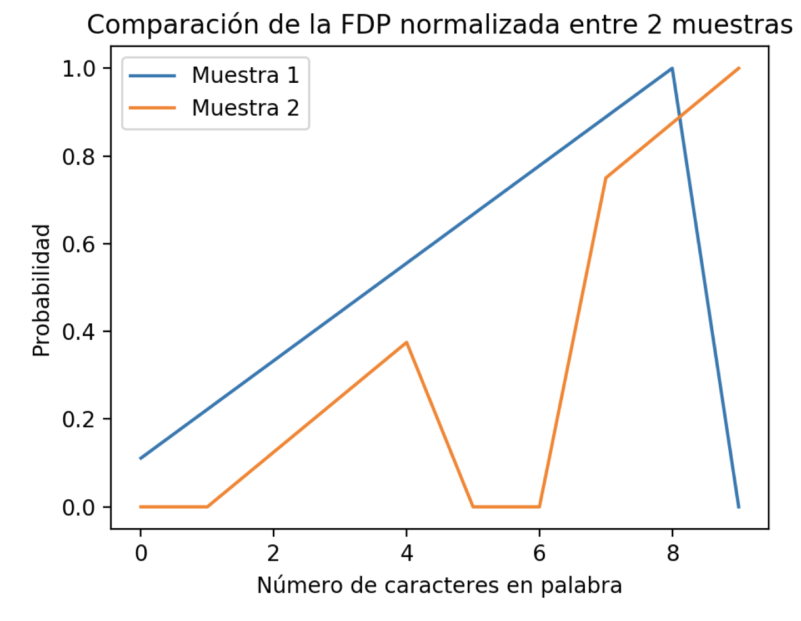
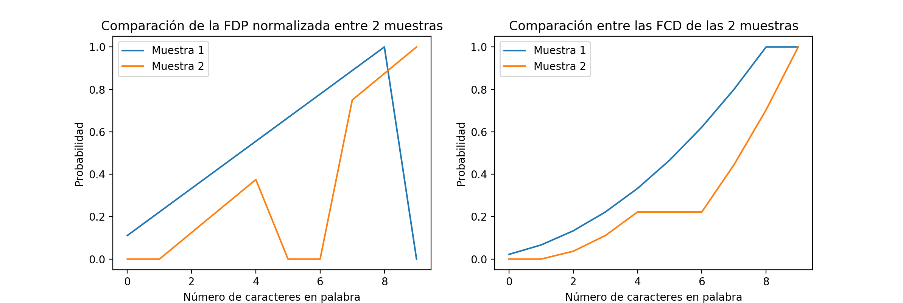
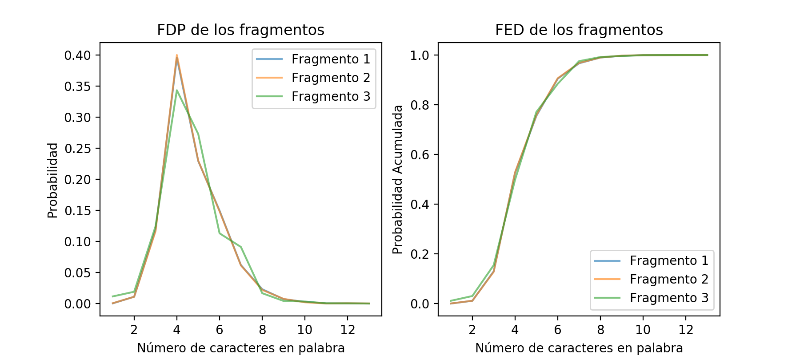
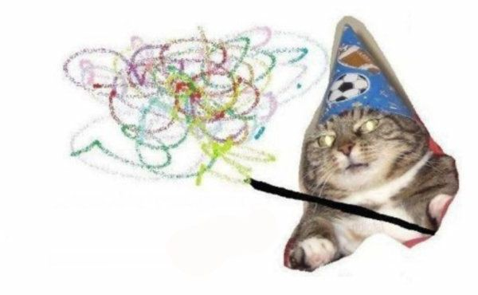
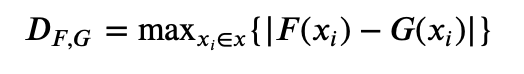
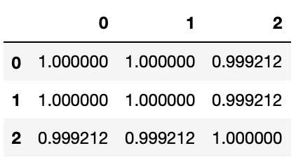

Las Páginas Perdidas Parte 1
Las Páginas Perdidas Parte 1: Pruebas Estadísticas de Bondad
Cuando observamos dos sets de datos, es muy tentador asumir que forman parte de diferentes grupos independientes i.e. no tienen relaciones entre ellos. Esta simplificación nos permite evaluar las propiedades de cada grupo de manera aislada, pues similar a la probabilidad, los eventos independientes son más fáciles de calcular. ¿Habrá veces que esto perjudique más de lo que nos ayuda?
La respuesta es sí pero no. Todo depende de la complejidad del fenómeno que estamos observando. Por ejemplo, es más sencillo analizar los factores involucrados en un juego de gato que los factores que entran en juego en el tráfico de Monterrey. Como científicos de datos, cada supuesto necesita evidencia y pruebas que lo respalden. En este artículo pondremos nuestros supuestos a prueba mediante la prueba de bondad de ajuste.
Imagina que encontraste tres páginas. No sabemos de qué libro vienen, o si vienen de libros diferentes. En realidad, dos vienen del mismo libro, de biología y el tercero de un libro de cocina. Sin embargo, no sabemos eso todavía. Vamos a buscar probarlo ahora.
Nuestro supuesto de las páginas de los libros es una hipótesis, la cual podemos aceptar a rechazar. ¿Qué información podríamos utilizar para probar nuestra hipótesis?
¿Pero qué es eso? ¿Acaso un mago?
¡Woosh! ¡Woosh! ¡Ahora tienes un tip!
El adorable mago nos da dos sospechosas pero convenientes pistas:
- Número de caracteres en cada palabra
- Palabras únicas En esta primera parte del misterio, analizaremos la primera pista.
¿Pero qué es una prueba de bondad de ajuste? Esta prueba mide cuánto una función o muestra coincide con nuestras expectativas de cómo se debería de ver, como otra función o muestra. Probaremos la bondad de ajuste con la prueba Kolmogorov-Smirnov (KS para abreviar).
¿Qué es la estadística Kolmogorov-Smirnov? La estadística KS mide la distance entre dos funciones cumulativas de densidad (FCD). Una FCD representa la probabilidad de obtener un valor de nuestra variable en particular si fueramos a elegir un valor de manera aleatoria. Lo que hace a la FCD especial es que cada cada valor de la variable es la suma de sus valores anteriores. Esta característica cumulativa permite FCD ser menos sensible a ruido en los datos. ¿Qué significa esto?
Echemos un vistazo a dos Funciones de Densidad de Probabilidad (FDP):

Las diferencias introducidas en las FDP de la Muestra 1 y Muestra 2 son:
- En la FDP de la muestra 2, faltan datos (representados por un 0) en algunos valores del rango de la variable “Número de caracteres en palabra”.
- Los valores no cero en la FDP de la muestra 1 comienzan con el valor de la variable zero, mientras que este cambio comienza tarde para la FDP de la muestra 2, comenzando con el valor de la variable dos.
- La “campana” de probabilidad de la muestra 1 termina en el valor 10, mientras que la muestra 2 parece continuar.
Si comparamos punto por punto la distancia entre cada punto en las dos FDP mostradas obtenemos una distancia bastante larga, especialmente para el valor de la cantidad de palabras con longitud de 10 caracteres. Con esta medida concluiriamos que las dos muestras no tiene una distribución de probabilidad similar. Sin embargo, en aplicaciones prácticas reales, nuestros datos pueden tener sesgo a través de:
- Información faltante para algunos valores de la variable, como los ceros en la FDP de la muestra 2
- Funciones de probabilidad desplazadas, o en otras palabras distribuciones con forma similar pero diferente centro, como podría interpretarse con las dos muestras.
Si utilizamos los datos de la FDP como están sin hacerles algún preprocesamiento, hacemos nuestras conclusiones sensibles al ruido y al sesgo, lo cual permitiría una gran variabilidad en nuestras mediciones. Hacer esto nos llevaría a obtener un resultado diferente cada vez que tomamos nuevas muestras. Necesitamos una estrategia que sea capaz de ir más allá de esto. Necesitamos la Función Cumulativa de Densidad (FCD):

La diferencia relativa entre las FCDs parece ser significativamente más pequeña que las de FDPs de las que originan. Si comparamos el Error Cuadrático Medio (ECM) entre los FDP normalizados en escala (el valor máximo es 1, en vez de menor a 1 para que tenga la misma escala que los FCDs) y los FCDs enconrramos que el ECM de los FDPs son 0.2, cinco veces mayor al valor de ECM de los FCDs con un valor de 0.04 (notebook). Excelente, ahora obtengamos las FCDs de las páginas perdidas:

Bello, bello. Pero, ¿qué fue lo que hicimos?
- Convertir las palabras de las páginas en números que representan su cantidad de caracteres ✅
- Registrar cuántas veces cierta longitud de palabra aparece en nuestras tres muestras ✅
- Dividir cada frecuencia obtenida del paso 2 por la cantidad de palabras totales. Esto nos dará la DFP para cada una de las muestras. ✅
- Para cada valor de longitud, sumar la probabilidad de los valores menores al actual. Esto nos dará la FCD empírica, o la Función Empírica de Densidad (FED). ✅
Si nos quedamos con el ECM para determinar si las páginas provienen del mismo libro, concluimos que eso es verdad. ¿Pero será esto verdad?
¡Aquí viene el mago con otra pista!

No. 🐱
Por lo tanto, necesitamos encontrar una comparación más granular. La clave está en no relajar tanto nuestra comparación, aún habiendo transformado nuestras DFPs en FEDs. Si bien esta transformación nos ayudó a ser más resilientes, sería genial si pudiéramos utilizar algo diferente a ECM para nuestra comparación que aproveche las propiedades de la FED. Afortunadamente, la prueba KS nos tiene cubiertos! Disponible en numerosas librerías de Python como Scipy, KS calcula dos valores, D y p, al comparar dos muestras:

En otras palabras, la diferencia más grande entre los puntos de las funciones F y G.
El valor de D se utiliza para determinar el valor de p, resultado el cual es más complicado de obtener (no en el alcance de este artículo). Afortunadamente para nosotros, el valor de p ya nos lo dan nuestras bellas librerías. Aquí están los resultados de aplicar KS a nuestros tres fragmentos (notebook):

El valor de p puede interpretarse como una probabilidad del 0 al 1. ¿Pero probabilidad de qué exactamente? ¿De que los fragmentos vienen de libros diferentes? No necesariamente. La única conclusión que nos da analizar la longitud de las palabras en los fragmentos es que es muy probable que el lenguaje entre los fragmentos sean muy similares entre las tres muestras.
Esto no es suficiente para determinar que provienen del mismo libro. Esto es un ejemplo clásico de una característica que no nos permite capturar completamente la variabilidad del dominio del problema de dónde viene.
¿Qué haremos ahora? La identidad de estas páginas siempre estará cubierta de duda e incertidumbre?
¡Averígualo en la siguiente edición!
Subscríbete a 🌮 tacos de datos | Aprende visualización de datos en español.
Recibe las mejores publicaciones directamente a tu caja de entrada